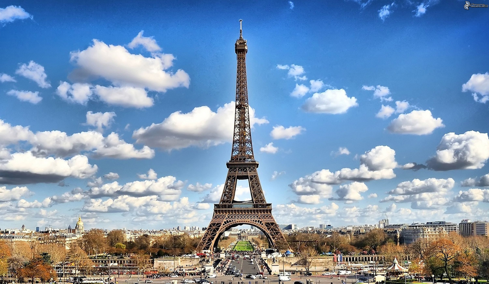
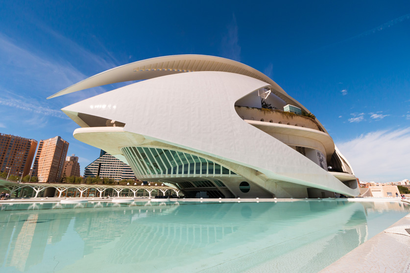

Gallery
-

Opera House of Sydney, Australia.
April 6, 2022Sydney Opera House sits on Bennelong Point. Bennelong Point was named after Woollarawarre Bennelong, a senior Eora man at the time of the arrival of British colonisers in Australia in 1788. The original cost estimate to build Sydney Opera House was $7 million. The final cost was $102 million and it was largely paid for by a State Lottery.
-

Louvre Museum of Paris, France
April 7, 2022The Louvre is the world's largest museum and houses one of the most impressive art collections in history. The magnificent, baroque-style palace and museum — LeMusée du Louvre in French — sits along the banks of the Seine River in Paris. It is one of the city's biggest tourist attractions.
-

Colosseum of Rome, Italy
April 5, 2022The Colosseum, also named the Flavian Amphitheater, is a large amphitheater in Rome. It was built during the reign of the Flavian emperors as a gift to the Roman people. Construction of the Colosseum began sometime between A.D. 70 and 72 under the emperor Vespasian.
-

Eiffel Tower of Paris, France
April 7, 2022The eiffel Tower weighs 10,000 tons, there are 5 billion lights on the Eiffel Tower, the French have a nickname for the tower: La Dame de fer, "the Iron Lady". It was the World's tallest structure until the Chrysler Building was built in New Yorth in 1930.
-

Golden-Gate Bridge of San Francisco, USA
April 5, 2022A marvel of modern engineering, the Golden Gate Bridge is 1.7 miles long and 90 feet wide. Its 4,200-foot main span between the two towers was the longest for a suspension bridge until 1981, while its 746-foot towers made it the tallest bridge of any type until 1993.
-

Mount Everest of NEPAL/CHINA.
April 5, 2022Mount Everest is the highest of the Himalayan mountains, and—at 8,850 meters (29,035 feet)—is considered the highest point on Earth. Mount Everest is a peak in the Himalaya mountain range. It is located between Nepal and Tibet, an autonomous region of China.
-

pyramids of giza egypt
April 5, 2022The Pyramids of Egypt are among the largest structures ever built and are one of the most important examples of Ancient Egyptian civilisation.
-

Old Trafford of Manchester, United Kingdom
April 5, 2022Our Old Trafford stadium, commonly known as "The Theatre of Dreams," was originally opened on February 19, 1910 with a capacity of approximately 80,000. During the Second World War, Old Trafford was used by the military as a depot, and on March 11, 1941 was heavily damaged by a German bombing raid.
-

Statue of Liberty of New York, USA
April 5, 2022The Statue of Liberty is a 305-foot (93-metre) statue located on Liberty Island in Upper New York Bay, off the coast of New York City. The statue is a personification of liberty in the form of a woman. She holds a torch in her raised right hand and clutches a tablet in her left.
-

stonehenge, Wiltshire, England
April 5, 2022Stonehenge is perhaps the world's most famous prehistoric monument. It was built in several stages: the first monument was an early henge monument, built about 5,000 years ago, and the unique stone circle was erected in the late Neolithic period about 2500 BC.
-

The Acropolis of Athens, Attica, Greece
April 5, 2022Located on a limestone hill high above Athens, Greece, the Acropolis has been inhabited since prehistoric times. Over the centuries, the Acropolis was many things: a home to kings, a citadel, a mythical home of the gods, a religious center and a tourist attraction.
-

Opera House Valencia, Spain
April 5, 2022Valencia Opera House is known as Palau de les Arts and was officially opened on 9 October 2005, the National Day of Valencia. As well as opera and classical music, Palau de les Arts Reina Sofia offers concerts with top Spanish entertainers such as Rosa, David Bisbal, Jose Merce, Antonio Orozco, David Bustamante and many more.